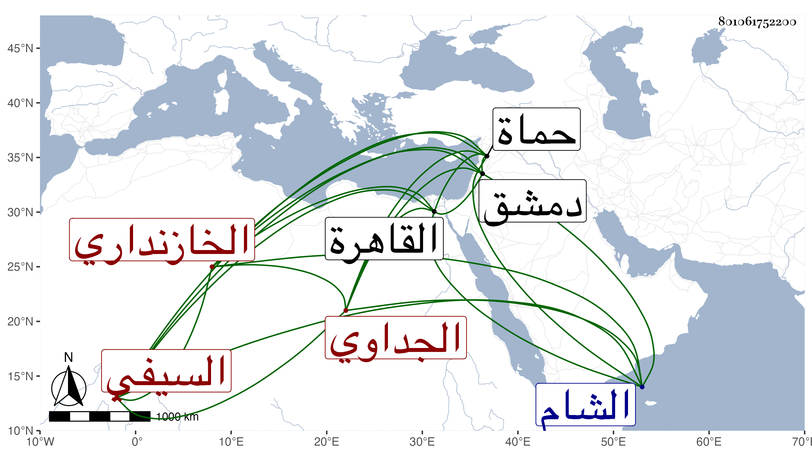

0902Sakhawi.DawLamic.ITO20230111-ara1.EIS1600.801061752200
Biography ID: 801061752200
259
جانم السيفي جانبك الجداوي الخازنداري . قرأ على التاج السكندري في القرآن وحج به معه ايام أستاذه وتلطف به في ذلك مع حلفه له على تحري الحل في مصروفه فيه ، وكتب الخط المنسوب وأتقنه مع يس الجلالي وكتب به أشياء منها مصحف جليل أتقنه وزمكه وكان وسيلة لتخلصه من الظاهر خشقدم بعد أستاذه وكذا كان يذكر بالفروسية بحيث كان أحد الباشات في سوق المحمل ، كل ذلك مع رغبته في ذوي الفضائل واحسانه اليهم ، وقد استقر به الأشرف قايتباي بسفارة الدوادار الكبير في نيابة حماة على مال فأقام يسيرا ثم استعفى رجاء عوده إلى القاهرة فعاكسه السلطان ورسم أن يكون بالشام أميرا كبيرا وقرر عوضه في النيابة سيباي الطيوري وكان قصيرا أعرج . مات فيما بلغنا بدمشق سنة ثمان وثمانين .
